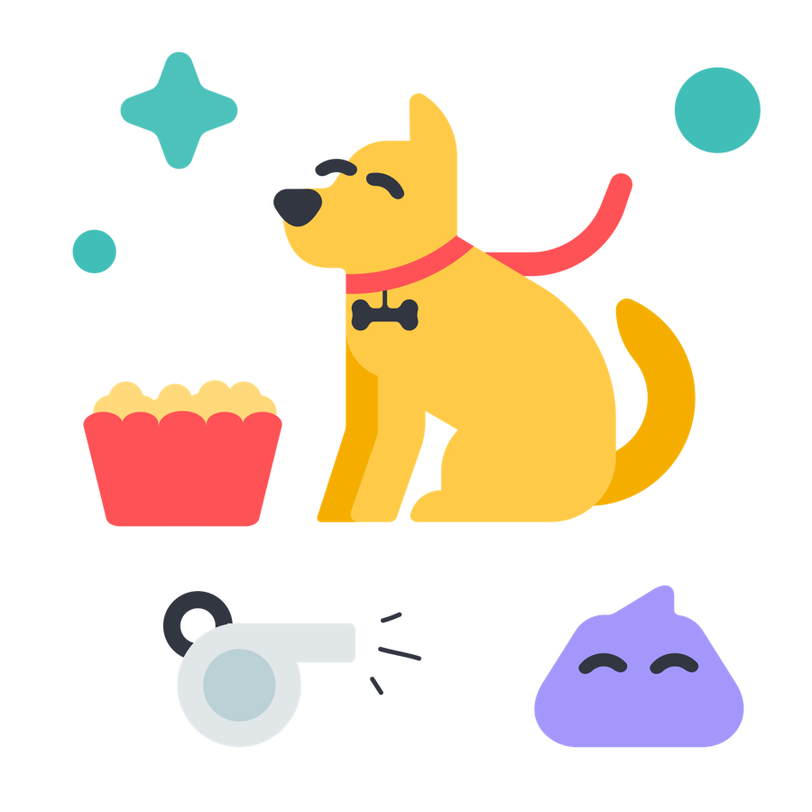
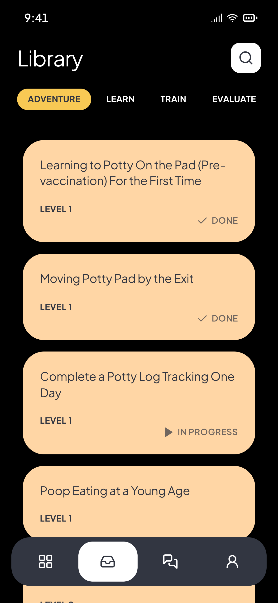
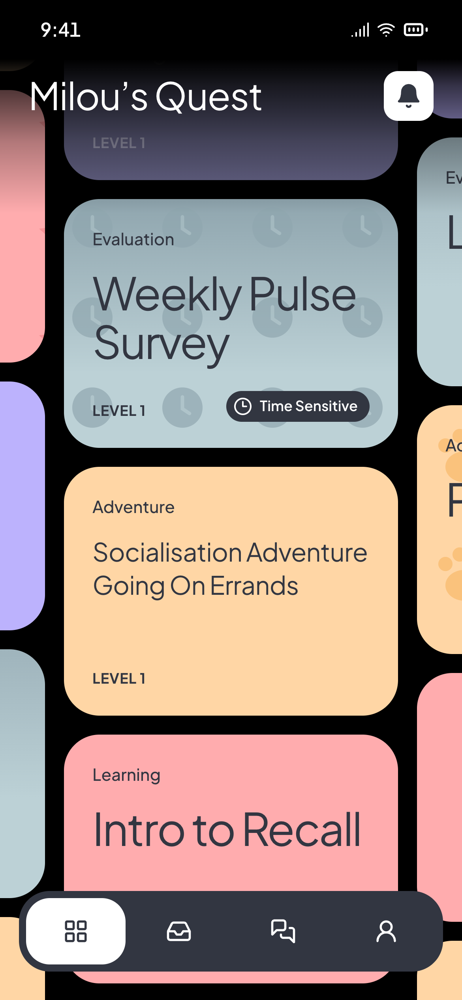
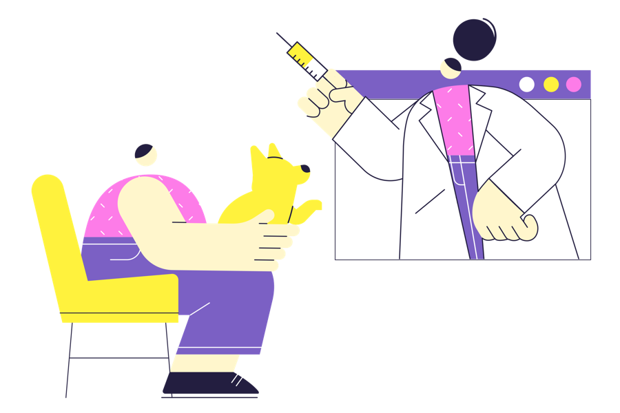
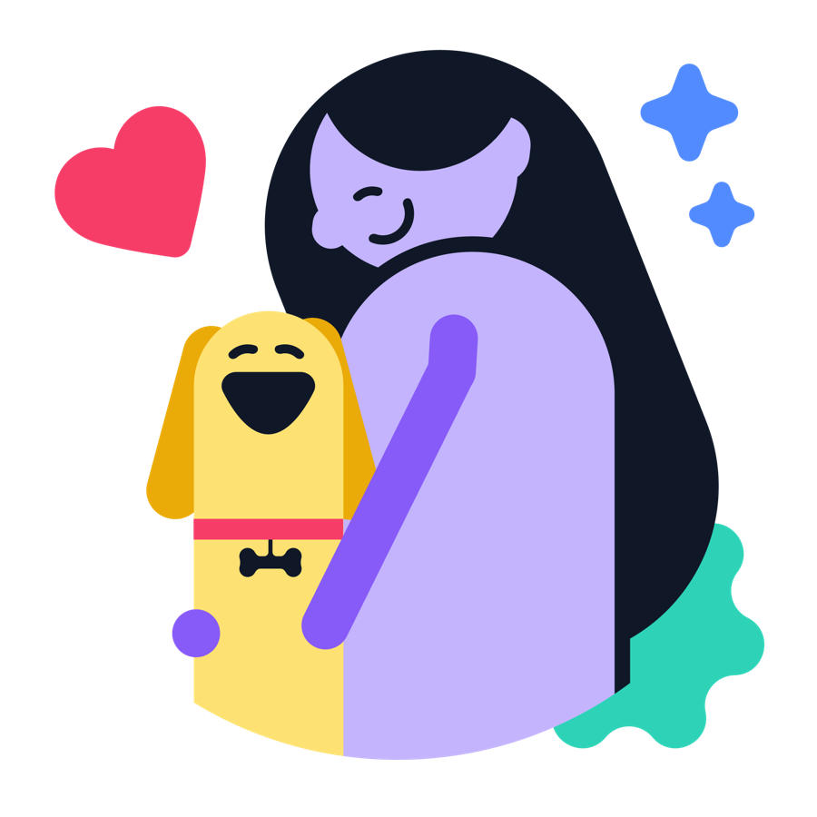
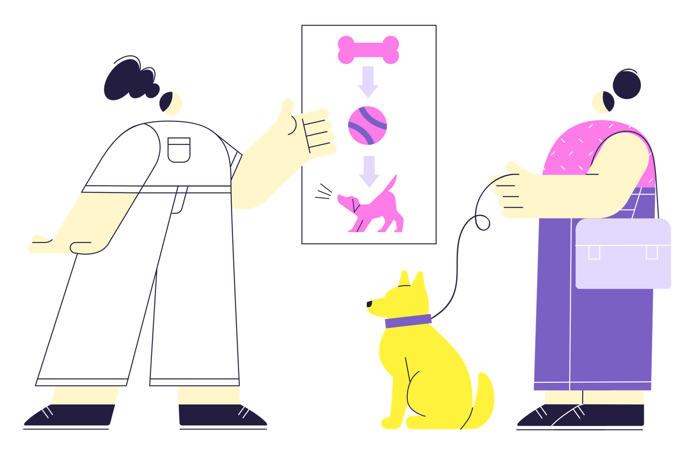

Pick a quest
Adventures, lessons and training in bite-size steps, matched to your dog’s age and level.

Short, playful training quests for you and your dog, with a certified trainer who checks in on every one.


Accidents, biting, crying in the crate. Google has a thousand answers.

A certified trainer builds a plan around your dog’s age and your goals.

Ten minutes a day, step by step, with a check-in after each one.

And an owner who knows exactly why it worked.
Adventures, lessons and training in bite-size steps, matched to your dog’s age and level.

Follow the steps with treats and a timer. Swipe through; pause anytime.

Tell your trainer how it went. They adjust the next quest to fit your dog.

“The half-open door trick changed everything. Snowy walks into her crate on her own now.”
“It felt like Chris knew Milou personally. Because he did.”
“Ten minutes after dinner. That’s all it took for leash walks to stop being a fight.”
Christophe spent years coaching new dog parents over email, texts and late-night video calls. Families loved the personal touch but kept losing the plan in long threads. Fido puts the plan, the quests and the trainer in one place.

Every Fido family gets a certified trainer. They read your check-ins, answer questions, and change the plan when your dog needs it.
“He noticed Biscuit was pulling only near other dogs. One small change, and walks got calm.”
Most quests take 10 to 25 minutes. Do one a day, or three a week. Your trainer plans around your schedule, not the other way round.
Fido opens to new families in small groups, so every dog gets a trainer’s full attention.